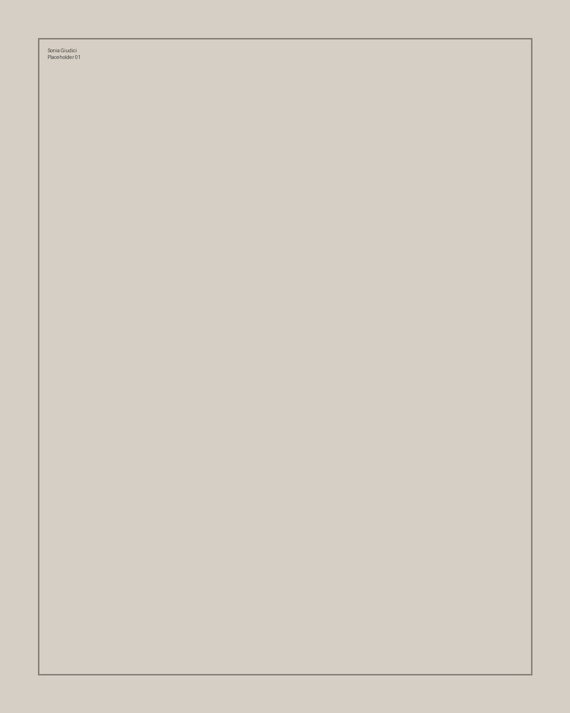
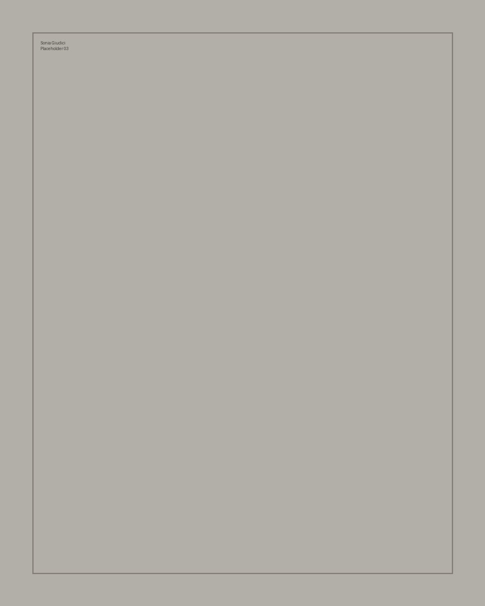
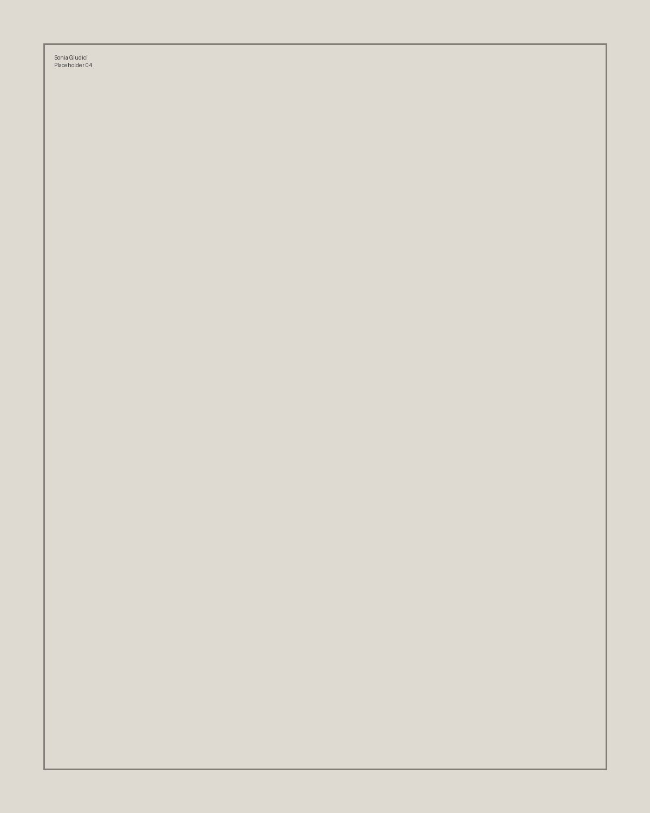
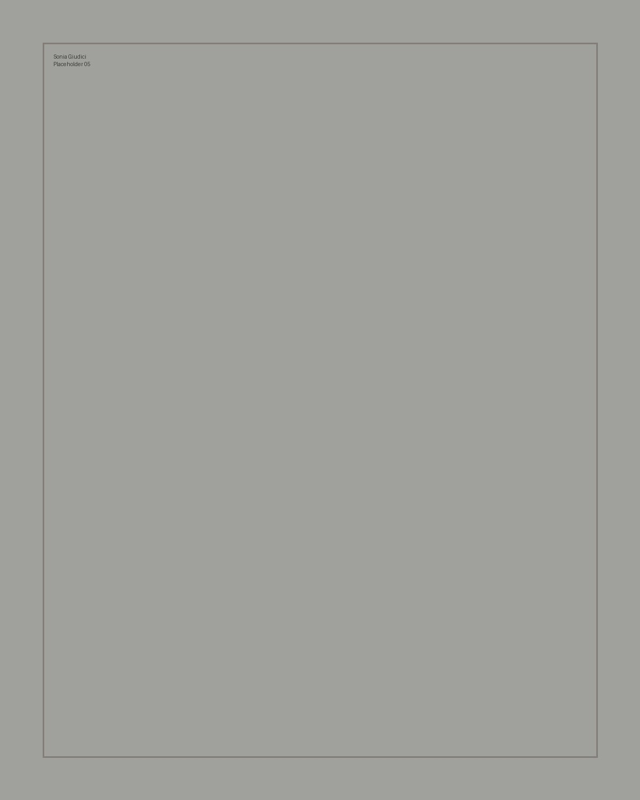
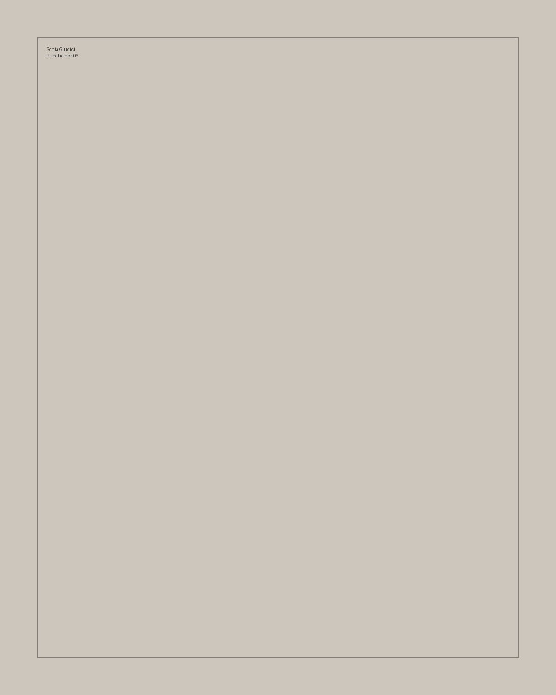
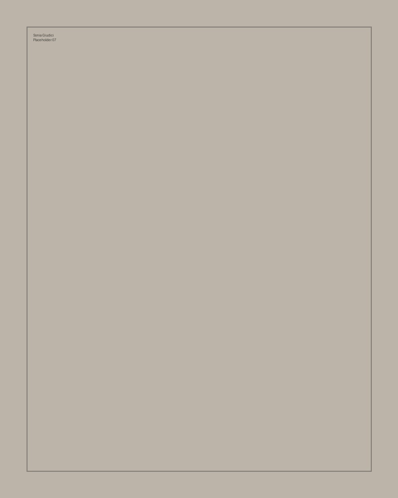
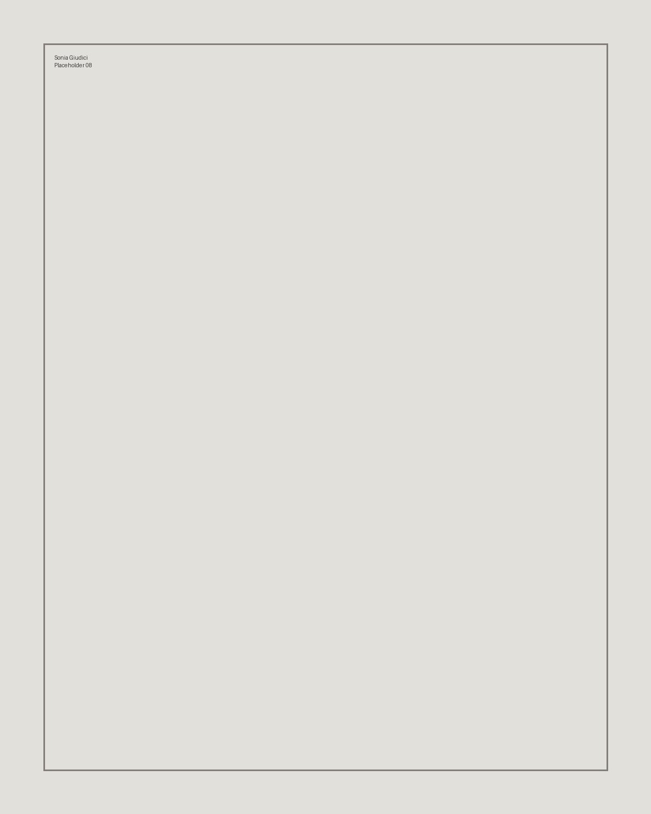
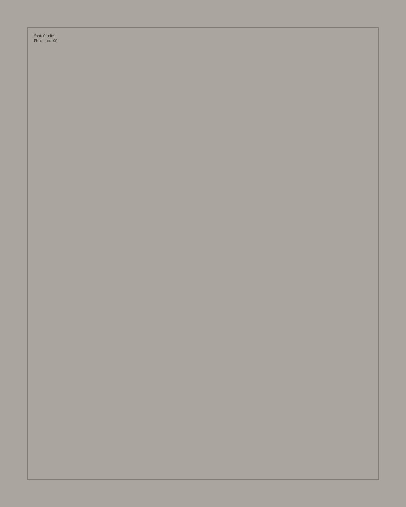

Selected work
Photography · Visual Storytelling · Creative Direction
Portfolio fotografico in costruzione. Questa è una base editoriale minimale, pensata per lasciare spazio alle immagini e alla sensibilità visiva di Sonia.

Selected work
Series

Research
Inserire qui la selezione curatoriale definitiva: poche immagini forti, non una raccolta completa. Il sito deve far ricordare una visione.





